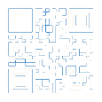

蓝屏模拟器 1.2 （Windows 8+）
（模拟 Windows 8 及更高版本的蓝屏界面）
模拟 Windows XP-7 蓝屏
背景颜色：
字体颜色：
备选颜色：
蓝色1
蓝色2
蓝色3
蓝色4
预览版绿
:(
:(
第一行：
你的设备遇到问题，需要重启。
第二行：
我们只为你收集某些信息，然后为你重新启动。
第三行：
100%
已完成
第四行：
有关此问题的详细信息和可能的解决方法，请访问
第五行：
https://www.windows.com/stopcode
第六行：
如果致电支持人员，请向他们提供以下信息：
第七行：
错误代码：CRITICAL_PROCESS_DIED
是否显示二维码
开始
（按下 F11 进入全屏，按下 Esc 键以退出蓝屏界面）
（修改自
STR
YesMyFault 1.2）
在新标签页中打开
:(
100%
